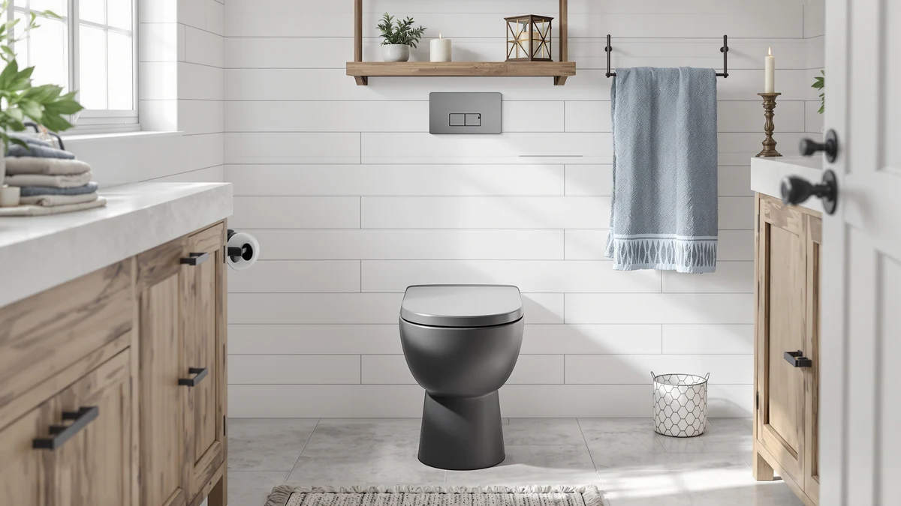

WITMYA Smart Toilet with Review (2026): Worth It?
Prices and picks verified as of October 2026. Independent, reader-supported reviews.


Quick Answer
Our WITMYA smart toilet with review found a one-piece toilet with a built-in bidet wash priced at $499.99, which puts it above two similarly equipped Loniko bidet toilets and a 19-inch Los Flexi model that skips the bidet entirely. If you want the bidet wash and don't mind paying the highest price in this group, WITMYA is the pick. If budget matters more, Loniko's $359.99 model covers the same core feature for less.
Our pick: WITMYA Smart Toilet with Bidet, $499.99 Check Price on Amazon
Bottom line: our top pick is the WITMYA Smart Toilet with Bidet Built In at $389.99.
Things to Know Before You Buy
- The WITMYA smart toilet with review centers on one feature: a built-in bidet wash, the same core feature you get from both Loniko toilets in this lineup.
- At $499.99, WITMYA's toilet costs $100 more than Loniko's $399.99 model and $140 more than Loniko's $359.99 model, despite listing the same bidet function.
- The Los Flexi 19 Inch High Toilet skips the bidet, but its comfort-height bowl is worth a look if you want a taller seat and don't care about wash features.
- None of these four listings publish independent lab flush ratings, so treat any clog-resistance claims as unverified until you check verified buyer reviews.
- Like any electric bidet toilet, WITMYA's model needs power near the bowl, so confirm you have an outlet within reach before you buy.
We put together this WITMYA smart toilet with review after noticing it keeps showing up next to cheaper one-piece toilets that promise the same bidet wash for less money. At $499.99, it's the most expensive toilet in this comparison, and the listing alone doesn't say whether that price difference buys you anything beyond the WITMYA name. Shoppers who land on this page are usually comparing four listings at once, and the prices alone make the decision look more complicated than it needs to be.
You're likely weighing this against Loniko's two bidet toilets, priced at $399.99 and $359.99, or the Los Flexi 19 Inch High Toilet at $399.99 if a taller bowl matters more to you than a bidet. Our job here is to lay out what each listing actually promises, at what price, so you can decide which gap is worth paying for. None of these four toilets has a long public track record yet, so we lean on what the listings state outright and on patterns in verified buyer feedback rather than manufacturer marketing copy.
Why You Should Trust Us
Ilane Tall covers bathroom fixtures for Best One Piece Toilets and has spent years comparing one-piece toilets, bidet features and smart toilet listings across Amazon and manufacturer pages. We do not run a fake testing lab, and we do not receive free units from WITMYA, Loniko or Los Flexi to review. We build this WITMYA smart toilet with review by comparing the published prices, names and brand listings for all four toilets side by side, and by reading verified Amazon buyer feedback for recurring complaints or praise.
We disclose our affiliate relationship clearly: if you buy through a link on this page, we may earn a commission, and that never changes which toilet we recommend first. Our priority is pointing out where a price difference is backed by a real feature gap and where it isn't, even when that means telling you the cheaper option is the smarter buy.
How We Compared
We started with the WITMYA Smart Toilet with Bidet's own listing, a one-piece toilet built around a bidet wash and priced at $499.99. From there, we compared that price and feature against the two Loniko bidet toilets in a similar range, at $399.99 and $359.99, since both promise the same core bidet function for less money. We added the Los Flexi 19 Inch High Toilet because it's the alternative path: skip the bidet, get a taller comfort-height bowl, and keep the price near $399.99.
We did not install or operate these exact units ourselves. Owners report mixed experiences with any electric bidet toilet depending on their home's water pressure and electrical setup, so we focused on what the listings themselves confirm, price, brand and stated features, and left the rest to verified buyer reviews rather than guessing. When a listing stays quiet on a detail that matters, like rough-in size or flush rating, we say so instead of filling the gap with a number we can't back up.
Overview & Specs

WITMYA Smart Toilet with Bidet
What we like
- One-piece design with a built-in bidet wash, so you are not bolting on a separate attachment
- Comes from a brand-specific listing rather than a generic unbranded import
- Sold directly on Amazon with standard buyer protection
Flaws but not dealbreakers
- At $499.99, it costs $100 to $140 more than two Loniko toilets that list the same bidet function
- The listing does not publish independent flush ratings or clog-resistance data
- No published rough-in size, so measure your existing setup before buying
| Material | — |
| Size | — |
The WITMYA Smart Toilet with Bidet is a one-piece toilet built around a single selling point: a bidet wash integrated into the bowl instead of sold as a separate attachment. At $499.99, it sits at the top of this comparison, and the listing frames the bidet function as the reason to pick WITMYA over a standard one-piece toilet. The product name doesn't go much further than that, which means the brand itself is doing a lot of the selling here, more than a detailed spec sheet would.
What the listing does not do is explain why WITMYA costs more than Loniko's two toilets, which list the same core bidet feature for $399.99 and $359.99. Until independent lab data or a larger pool of verified reviews turns up a real difference in wash pressure, flush strength or build quality, the WITMYA price premium looks more like brand positioning than a documented performance gap. That doesn't make it a bad toilet, it means the extra money is paying for the WITMYA name rather than a feature you can point to and confirm.
What We Liked
The clearest thing in WITMYA's favor in this WITMYA smart toilet with review is focus. The listing does not bury the bidet wash under a dozen secondary features, it leads with the one reason you would choose this toilet over a standard model. That makes the buying decision simpler: either you want a built-in bidet, or you don't.
We also like that WITMYA sells this toilet as a one-piece unit rather than a tank-and-bowl kit with a bolted-on bidet attachment. Fewer seams generally mean fewer places for leaks to start, and a one-piece design is easier to clean around the base.
Selling directly through Amazon also gives you Amazon's standard return window and buyer protection, which matters for a $499.99 purchase you cannot easily test before installing it.
What Could Be Better
Price is the obvious issue. At $499.99, WITMYA charges $100 more than Loniko's $399.99 bidet toilet and $140 more than Loniko's $359.99 model, and all three listings describe the same core bidet function. Nothing in WITMYA's listing explains that gap with a documented feature, a longer warranty, or independent test data, so you are partly paying for the brand name. That premium adds up fast if you're also budgeting for an electrician to add an outlet near the bowl.
The second issue is what's missing from the listing itself. There's no published rough-in measurement, no flush rating, and no clog-resistance number, which means you are relying on verified buyer reviews rather than hard specs to judge long-term reliability. If you want documented performance numbers before you spend $499.99, this listing does not give you much to go on, and you'll want to read through a stretch of recent buyer feedback before committing to a toilet at this price.
Who Is It For?
This toilet makes sense if you specifically want the WITMYA brand, or if you've already read through its buyer reviews and feel confident about the bidet wash quality in a way the listing alone does not confirm. It also fits if you're replacing another WITMYA fixture and want a matching brand across your bathroom, or if you've ruled out Loniko for a reason the listings don't capture, like a prior bad experience with that brand.
Skip it if you simply want a bidet wash at the lowest price, since Loniko covers the same feature for $100 to $140 less. Skip it too if a bidet is not the priority and you'd rather have a taller, comfort-height bowl, in which case the Los Flexi 19 Inch High Toilet is the more direct fit. And skip all four of these listings if you need a documented flush rating in hand before you buy, since none of them publish one.
Alternatives to Consider
If the WITMYA price tag gives you pause, these three toilets cover the two realistic alternatives: the same bidet function for less money, or a taller bowl with no bidet at all.

Editor’s Pick
Smart Toilet with Bidet Built
Loniko's one-piece smart toilet lists the same built-in bidet wash as WITMYA for $100 less, making it the pick if you want the feature without the brand premium.
$399.99
Check Price on Amazon
Best Value
19 Inch High Toilet Los
The Los Flexi 19 Inch High Toilet skips the bidet entirely, but its taller comfort-height bowl and matching $399.99 price make it the better value if a wash feature isn't a priority for you.
$399.99
Check Price on Amazon
Premium Choice
Smart Toilet with Bidet Built
A second Loniko bidet toilet in this lineup, priced $40 lower than its sibling at $359.99, worth checking first if the lowest price for a built-in bidet wash matters most to you.
$359.99
Check Price on AmazonFrequently Asked Questions
Does the WITMYA Smart Toilet with Bidet need a dedicated electrical outlet?
Yes. A built-in bidet wash runs on electricity, so this toilet needs a grounded outlet within reach of the bowl, the same as any electric bidet toilet, including the two Loniko models in this comparison. If your bathroom doesn't already have one nearby, plan for an electrician before installation.
Is the WITMYA smart toilet with review worth it over Loniko's cheaper bidet toilets?
Based on the published listings, Loniko's $399.99 and $359.99 toilets describe the same built-in bidet wash as WITMYA's $499.99 model. Unless you have a specific reason to prefer the WITMYA brand or its buyer reviews give you more confidence, the Loniko options cover the same core feature for less money.
How does the Los Flexi 19 Inch High Toilet compare if I don't need a bidet?
The Los Flexi 19 Inch High Toilet matches Loniko's $399.99 price point but skips the bidet wash entirely in favor of a taller, comfort-height bowl. It's the more direct fit if a wash feature isn't the reason you're shopping.
Final Verdict
Our WITMYA smart toilet with review comes down to one question: do you want the WITMYA brand specifically, or do you want the bidet wash feature at the lowest price? If it's the brand, the $499.99 price gets you the same one-piece bidet design with WITMYA's name on it. If it's the feature alone, Loniko's $359.99 and $399.99 toilets list the same built-in bidet wash for less, and the Los Flexi 19 Inch High Toilet is there if a taller bowl matters more to you than a bidet.